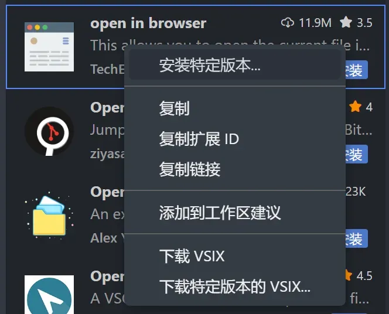
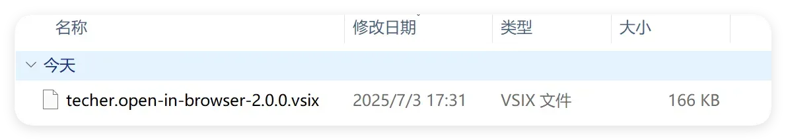
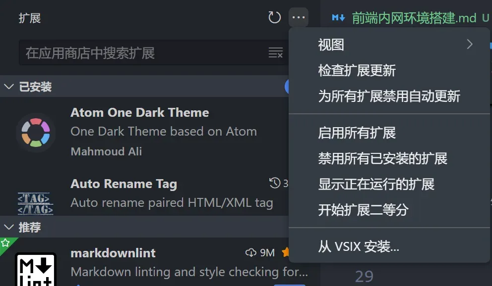
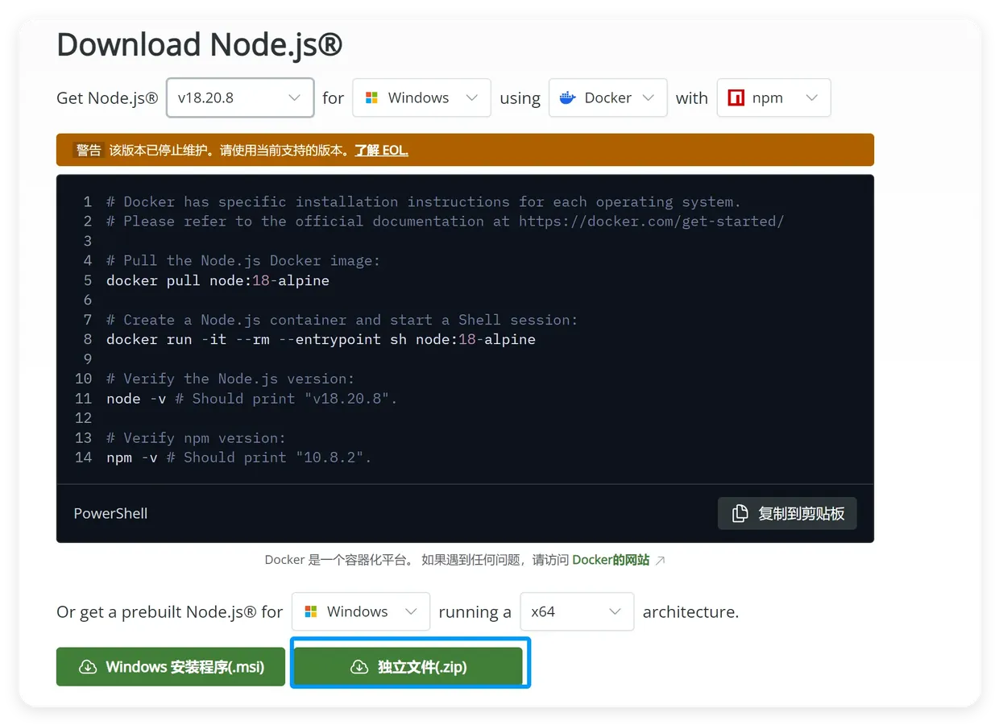
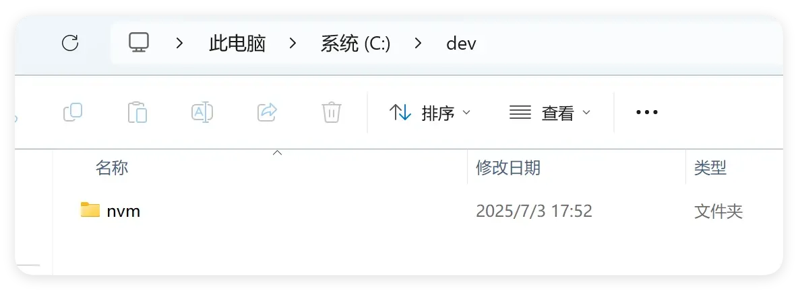
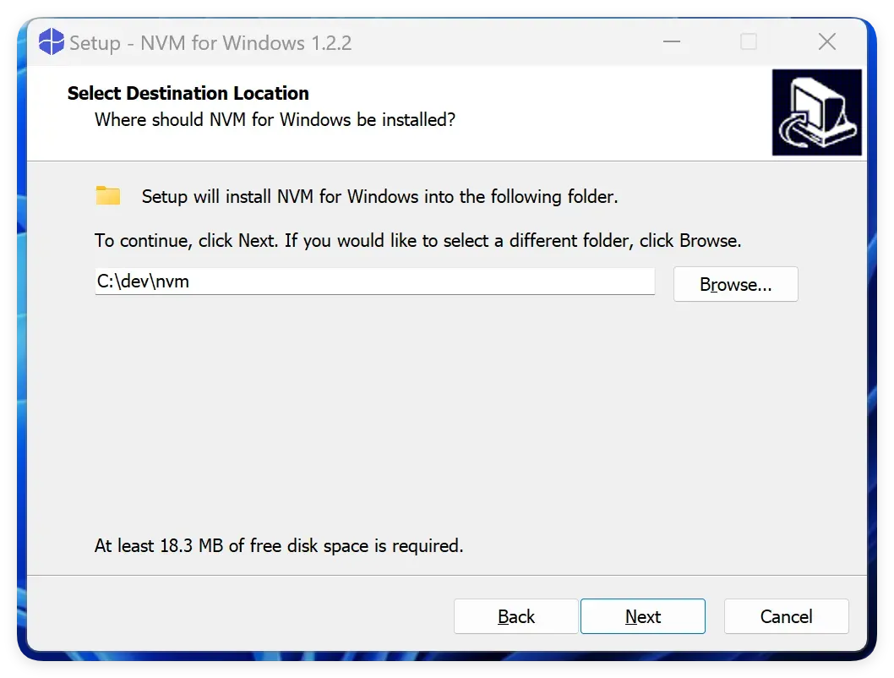
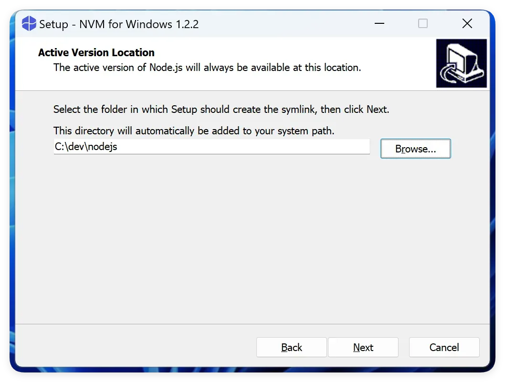
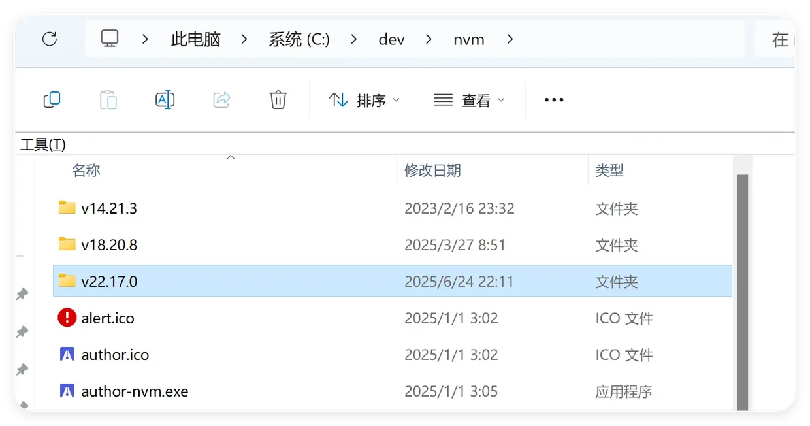
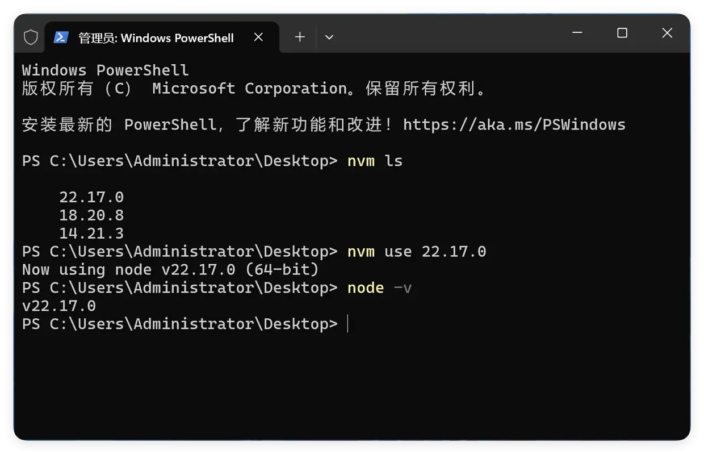

内网前端开发环境搭建
使用 nvm 管理 Node.js 版本，在内网离线安装 VS Code 插件。
背景
现在很多涉密公司都有自己的内网环境，许多项目也都是在内网环境下开发的。这对前端开发很不友好，因为大量插件和依赖需要直接从公网下载。
尤其是 VS Code 插件 和 nvm 下载各版本 NodeJS，在内网中处理起来比较麻烦。本文记录在内网环境下搭建前端开发环境的完整步骤。
一、VS Code 插件安装
平常我们通过 VS Code 插件市场下载插件，但在内网环境下通常无法访问市场，因此需要提前在外网下载好插件，再导入内网。
操作步骤：
- 在外网环境下载最新版 VS Code 安装包。
- 官网地址：
https://code.visualstudio.com/
- 官网地址：
- 打开 VS Code 插件页面，右键需要的插件，选择下载为 VSIX 格式文件。

- 将 VS Code 安装包与插件的 VSIX 文件一起打包，导入内网。

- 在内网安装完 VS Code 后，进入「扩展」页面 → 点击右上角「更多」按钮 → 选择「从 VSIX 安装」，即可完成插件安装。

💡 提示：如果安装失败，可能是插件版本与 VS Code 版本不兼容。建议在外网环境下，下载最新版 VS Code 与最新版插件 VSIX 文件进行测试，确认安装成功后再导入内网开发环境。
二、使用 nvm 安装 NodeJS
平常 nvm 可以直接联网下载各版本 NodeJS，但内网环境无法直接使用 nvm 命令下载，需要一些额外操作。
操作步骤：
- 在外网下载所需文件：
- nvm 安装程序：
https://github.com/coreybutler/nvm-windows/releases - NodeJS 独立文件（zip 压缩包）：
https://nodejs.org/zh-cn/download
- nvm 安装程序：
⚠️ 注意：NodeJS 要下载 独立文件（zip 压缩包），不要下载安装程序版本。

2. 将 nvm 安装程序与 NodeJS 压缩包上传至内网电脑。 3. 在 C 盘新建dev 文件夹，并在其中新建 nvm 子文件夹，用于存放 nvm。

4. 运行 nvm 安装程序：- 第一步：选择 nvm 安装位置为
C:\dev\nvm。 - 第二步：选择 NodeJS 安装位置为
C:\dev\nodejs，随后一路「下一步」即可。


-
安装完成后，运行
nvm -v验证是否安装成功。 -
将下载的各版本 NodeJS 压缩包解压到
C:\dev\nvm文件夹中，并将文件夹名修改为对应版本号。


常用命令：
| 命令 | 作用 |
|---|---|
nvm -v |
查看 nvm 版本，验证是否安装成功 |
nvm ls |
查看当前已安装的 NodeJS 版本 |
nvm use <版本号> |
切换到指定版本的 NodeJS |
小结
内网环境搭建前端开发环境的核心思路是：在外网下载好离线安装包与依赖文件，再导入内网离线安装。
- VS Code 插件：外网下载 VSIX 文件 → 内网「从 VSIX 安装」。
- NodeJS 环境：外网下载 nvm 安装程序与 NodeJS zip 包 → 内网安装 nvm 并手动解压各版本。